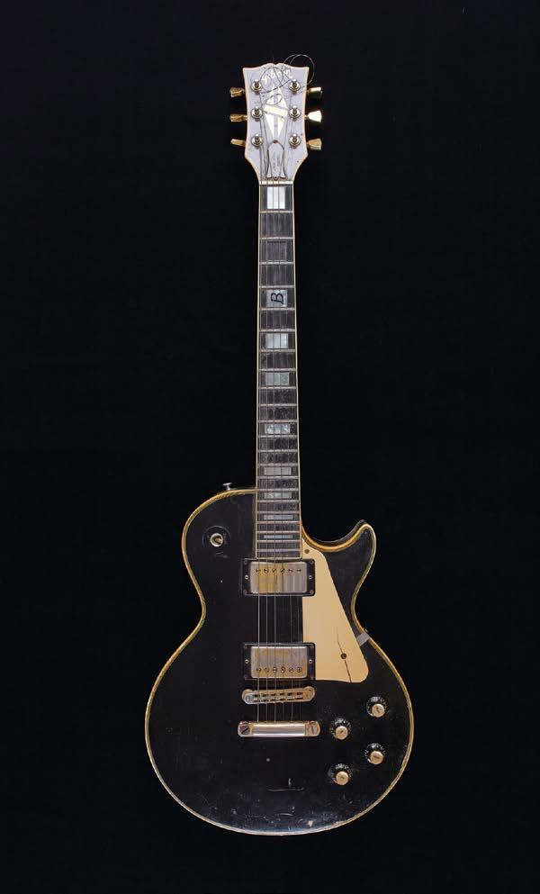
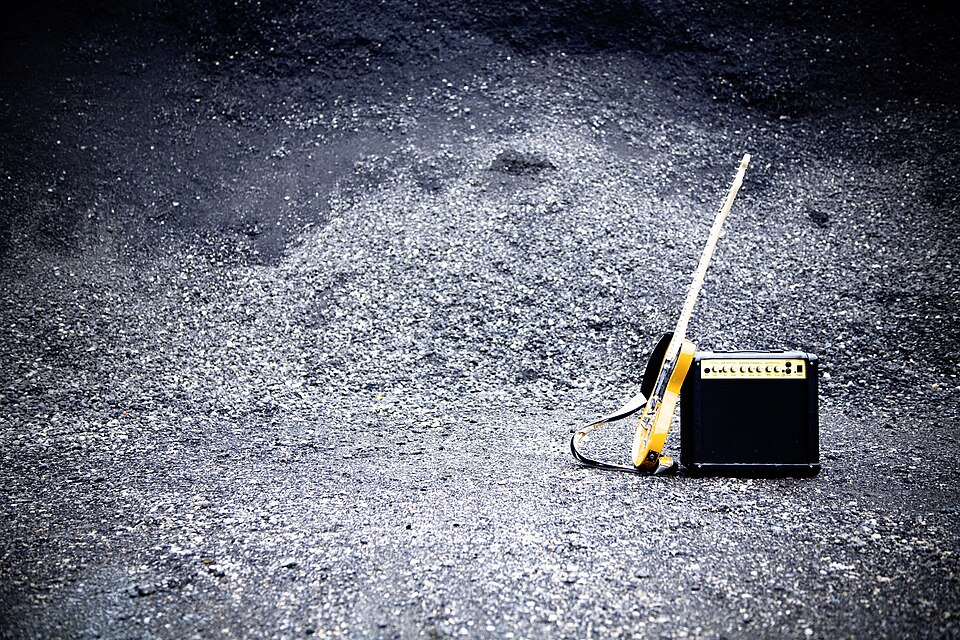
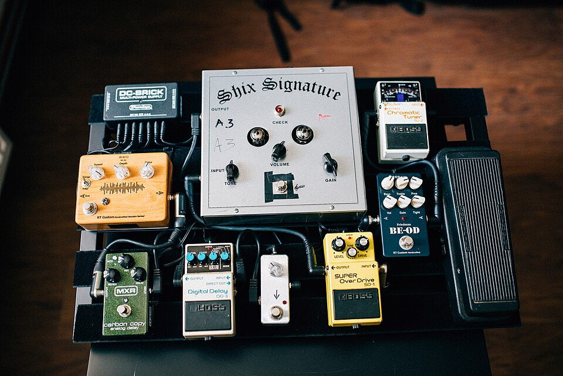
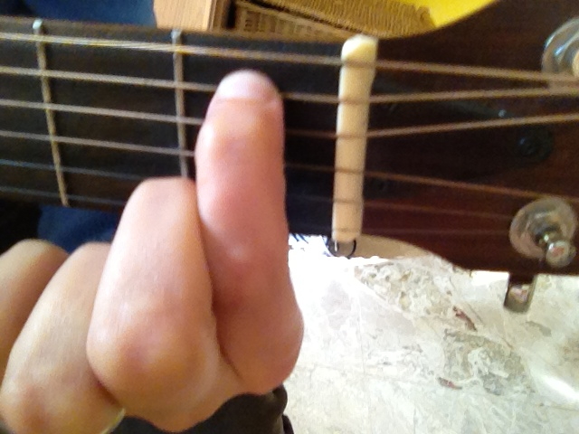

① 食指② 中指③ 无名指④ 小指
LIVE / FINGERING
从左到右是 6 → 1 弦。点弦单拨，按住横划扫弦。
图上从左到右是 6 → 1 弦。○ 空弦，× 不弹；1–4 分别是食指到小指，横线表示横按。

换一个调，找一个把位。点下去，听听它。
看懂器材，把手放对，再拨出一个干净的音。点开想了解的卡片，随时回来查。

电吉他先把弦的振动变成电信号，再让放大系统把声音送出来。不插线也能听到一点琴弦声；接上音箱，才更容易听到它的音色。
弦钮用来调节琴弦张力，从而调音。粗弦是第 6 弦，细弦是第 1 弦；先记住标准调弦 E A D G B E。
一体式吉他音箱把前级、功率放大和喇叭装在一起。前级塑造音色，后级把信号放大，喇叭把它变成你听到的声音。

Gain 主要影响前级增益和失真程度；Volume / Master 调整响度。不同音箱会相互影响，小幅转动、边听边调。
吉他接声卡的 INST / Hi-Z 乐器输入，再用电脑的音箱模拟处理，最后接声卡耳机口或监听音箱。普通线路输入与吉他输入并不相同。
接标有 PHONES / HEADPHONES 的耳机口。SPEAKER OUT 是给箱体喇叭的输出，不能接耳机或声卡。音箱与负载的具体要求按型号说明书来。

效果器处理吉他的电信号，改变颗粒、动态、音色或空间感。它可以是脚下的一块单块踏板，也可以集成在综合效果器、音箱或电脑插件里。
单块通常专注一种或一组效果；综合效果器把多种效果和预设放在一起，有些还带音箱与箱体模拟。先一次只开一种，比较开关前后，再试着叠加。
选一种效果，开始播放；随时切换 A / B，乐句会接着播放。
过载：听音头增加的颗粒，以及尾音的饱和感。
点播放，再切换 A / B 对比。
使用合成吉他与数字效果演示，并平衡示范响度。实际音色会随设备、设置和演奏变化。
让声音出现饱和与颗粒感。过载常保留触弦的轻重变化，失真通常更强烈，Fuzz 则有更粗粝、毛茸茸的质感。
收拢强弱差，让音量更均匀，也会改变起音与延音的感觉。压缩太多，触弦的轻重差别也会变小。
调整低频、中频和高频的比例。低频多不一定更厚实，中频也影响吉他能否在合奏里被听清。
给声音增加层次、摆动或扫过的感觉。常见旋钮 Rate 调变化速度，Depth 调变化深度。
像回声一样重复刚弹的音。Time 调间隔，Feedback 调重复量，Mix / Level 调回声与原声的比例。
模拟房间或大厅里的反射尾音。Decay 调尾音长度，Mix 调空间感多少；先少量加入，比较容易听清音符。
另外还有 Wah 哇音、八度与移调、颤音、降噪门、Looper 循环录音等。降噪门主要压低停弹时的噪声；Looper 则能录下短句，再循环播放。
一块效果器通常需要两条乐器线：吉他接 IN，OUT 接音箱 INPUT。看接口标签接线，不要只凭踏板左右位置判断。先用清音通道、小音量试听。
多块踏板的常见起点：调音器 → 过载 / 失真 → 调制 → 延迟 → 混响。这只是示例，顺序会改变结果；一些老式 Fuzz 对前面的设备特别敏感，可优先按说明书尝试。
直连声卡、全频音箱或调音台时，常用音箱模拟 + 箱体模拟 / IR 来补齐整套吉他音箱的声音。IR 常用来呈现箱体与麦克风的响应，不能单独代替所有音箱和效果。
普通单块效果器不一定有这些功能，也不一定能直接推耳机。按设备说明选择输出模式和声卡输入；耳机接专用 PHONES 口。若接真实吉他音箱，留意是否重复叠加了音箱或箱体模拟。
如果主要用音箱自身的失真，可以把延迟、混响放进音箱的 FX Loop，让回声和尾音经过前级失真之后再加入。没有效果环路的音箱，也可以先把效果器接在 INPUT 前。
确认音箱具备 SEND / RETURN，并核对环路电平与效果器是否匹配。FX Loop 与 SPEAKER OUT 是不同接口；上图只画信号路线，音箱与喇叭仍按原厂要求连接。
Fender · 效果器入门 · BOSS · 效果器连接 · Line 6 · 输出与音箱模拟 · BOSS · 供电要求

让腿或背带托住琴身，琴颈略微抬起，肩膀放松。先让琴稳住，按弦的手就不用分心抓着它。以下以常见右手琴为例，左手琴左右对换。
单音先用指尖按弦，尽量靠近目标品丝、停在它的琴头一侧。手指弯曲，给旁边琴弦留出空间；拇指轻靠琴颈后方作支撑。
先轻按、拨一下，再只增加到声音清楚所需的力度。手腕保持舒适；感觉紧绷或不舒服就先停下放松。
先把指尖移近品丝，再小幅增加压力；确认手指没有正压品丝。位置调整后仍持续打品，可能需要检查琴弦高度或琴的设定。
逐根拨一下，听是哪根弦被碰到。把按弦手指稍微立起来，给邻弦留出空间，再试一次。
从吉他开始往后检查：琴上的音量、乐器线两端、音箱 INPUT、所选通道与 Master。插拔前把音量调低；耳机练习还要检查插孔是否正确。
资料参考：Yamaha · 电吉他结构 · Fender · 握拨片 · Gibson · 按弦 · BOSS · 音箱接口 · Focusrite · 乐器输入与监听
横向滑动查看 0–24 品，竖向滑动页面。轻触试听，多个手指可同时按音。
点开指法，也可以直接加到练习。
同一个和弦，换个位置弹。
从左到右是 6 → 1 弦。点弦单拨，按住横划扫弦。
图上从左到右是 6 → 1 弦。○ 空弦，× 不弹；1–4 分别是食指到小指，横线表示横按。
排好和弦，跟着节拍灯循环弹。
每张卡片占一小节。在第一拍换和弦，或把重复的和弦加两次。
排序用 ← →，删除用 ×。从图鉴加入时也会保留所选把位。
先调准，再开始弹。
点击弦号可锁定目标，适合相差较大的音。点“自动匹配”恢复自动选弦。
一次弹一根弦，等声音稳定后读数。自由识音会显示单音的音名和八度。
点击后允许麦克风。音频在本机即时分析。
偏低时调高，偏高时调低；绿色表示偏差在 ±5 音分内。
先听，再找出它们。
电脑用 A W S E D F T G Y H U J K O L P ; 弹奏。手机可多指同弹，放大后固定横向布局；音域较宽时可拖动音域条或琴键上方空白处。
题目使用所选音域。点击钢琴或下方音名作答，再点一次取消；多个音不分顺序。
点“开始 / 下一题”，听完后选择你听到的音。